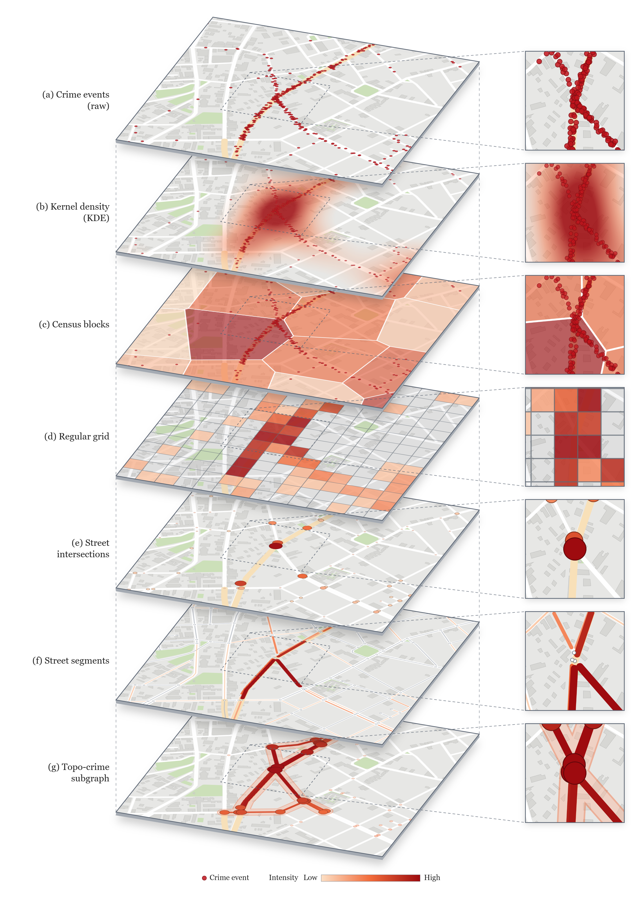
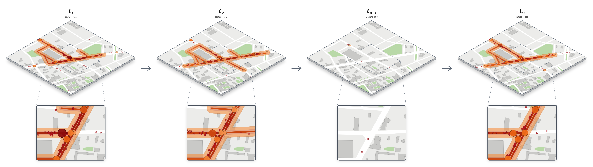

Figuras del método Topocrime
Dos editores para generar las figuras del paper sobre la red vial real de Lima (OpenStreetMap), con delitos simulados y subgrafos calculados con el método. Cada página permite ajustar geometría, colores, ubicación y símbolos, y exporta la figura en PNG o en SVG vectorial.
De eventos a subgrafo
Siete representaciones espaciales del mismo crimen, apiladas en vertical: eventos, KDE, manzanas censales, grilla, intersecciones, segmentos y subgrafo topo-crimen.

Abrir el editor →
Evolución temporal de un hotspot
La topología del subgrafo de una misma zona a lo largo de los meses (t₁ → t₂ → … → tₙ), con zoom y círculos por aglomeración en esquinas.

Abrir el editor →